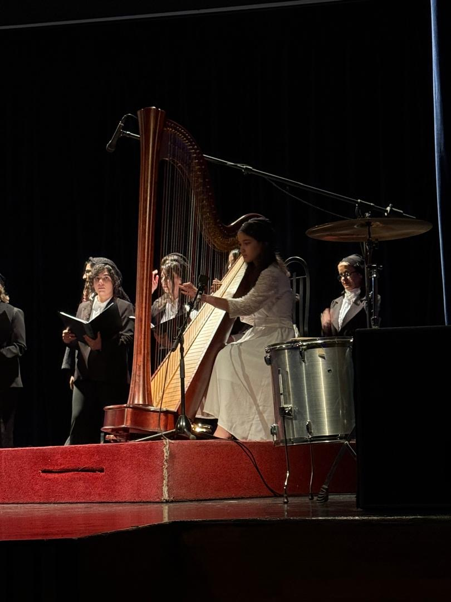

مدرس شبکه آموزش: مهدی غروی | تاریخ پخش: یکشنبه ۲۳ فروردین
آزمون ریاضی نهم
به سؤالهای زیر پاسخ بده و در پایان امتیازت را ببین.
📝 آزمون کوتاه ریاضی نهم
۱) اگر A = {1, 2, 3, 4} باشد، تعداد زیرمجموعههای A چند تاست؟
۲) حاصل √81 کدام است؟
۳) عدد 0.3333... برابر است با:
۴) شیب خطی که از نقاط (2,3) و (4,7) میگذرد چقدر است؟
۵) احتمال آمدن عدد ۶ در پرتاب یک تاس سالم برابر است با:
خواندنیهای جذاب ریاضی
مطالبی که نشان میدهند ریاضی در همه جای جهان حضور دارد.
🌻 فیبوناچی
الگوی عددی در طبیعت، هنر و طراحی
🎼 چنگ و موسیقی
نسبتهای عددی در صدا و خوشآهنگی
🌌 ریاضیات جهان
زبان مشترک علم، طبیعت و هستی
📚 لئوناردو فیبوناچی؛ ریاضیدانی که طبیعت را رمزگشایی کرد
لئوناردو فیبوناچی یکی از مشهورترین ریاضیدانان قرون وسطی بود. شهرت او بیشتر به دلیل معرفی دنبالهای از اعداد است که امروزه به نام «دنباله فیبوناچی» شناخته میشود.
۱، ۱، ۲، ۳، ۵، ۸، ۱۳، ۲۱، ۳۴، ...
در این دنباله، هر عدد از جمع دو عدد قبلی به دست میآید. این الگو در طبیعت، گلها، صدفها، دانههای آفتابگردان و حتی طراحیهای هنری دیده میشود.
دنباله فیبوناچی نشان میدهد که ریاضیات زبانی جهانی برای توصیف نظم پنهان جهان است.
این اجرای چنگ اختیاری است؛ هر زمان خواستید روی دکمه پخش بزنید.
🎼 هارمونی اعداد: چنگ، ریاضیات و راز خوشآهنگی

🎼 اجرای چنگ
وقتی به ساز چنگ نگاه میکنیم، با دستهای از سیمهای موازی روبرویم. اما در پسزمینهٔ این زیبایی بصری، دنیایی از نسبتهای ریاضی نهفته است.
نسبت طلایی در سیمها طول سیمهای چنگ از قانونی ساده پیروی میکند: نسبت طول دو سیم مجاور برای تولید فاصلهٔ نیمپرده، حدود ۱۶:۱۵ است. موقعیت اتصال سیمها به خرک نیز میتواند از نسبت طلایی ۱٫۶۱۸ الهام بگیرد.
نسبت فرکانس و فاصلهٔ موسیقایی در فیزیک صوت، بسامد هر سیم با طول آن رابطهٔ عکس دارد. فاصلههای موسیقایی چیزی جز نسبتهای سادهٔ اعداد نیستند.
نسبتهای موسیقایی اکتاو: ۲ به ۱ پنجم درست: ۳ به ۲ چهارم درست: ۴ به ۳
چنگ و سری فیبوناچی تعداد سیمهای چنگ در دورههای مختلف، از ۲۲ سیم در دوران باستان تا ۴۷ سیم در چنگ کنسرتی مدرن، به بعضی اعداد دنباله فیبوناچی نزدیک بوده است.
وقتی نوازنده انگشت خود را روی سیم میگذارد، عملاً طول مؤثر سیم را به کسری از طول اصلی تبدیل میکند و همان نسبت ریاضی را بازآفرینی میکند.
چنگ نه فقط یک ساز، بلکه ماشینی برای شنیدن اعداد است. هر نغمهٔ آن، نسبتی از فرکانسهاست که مغز ما آن را بهعنوان زیبایی تفسیر میکند.
فیثاغورث اولین بار این راز را کشف کرد و امروز میدانیم که موسیقی، ریاضیات جاری در هواست.
«موسیقی، ریاضیاتی است که در آن بهجای اعداد، با گوش میاندیشیم.»
نسبت طلایی یکی از زیباترین نسبتهای ریاضی است که در طبیعت، معماری، نقاشی و طراحی دیده میشود. این نسبت نشان میدهد چگونه ریاضیات میتواند با زیبایی و هماهنگی همراه باشد.
📐 ریاضی نهم در زندگی روزمره
ریاضی نهم فقط برای امتحان نیست. مبحثهایی مثل مجموعهها، توان، ریشه، شیب خط، معادله و احتمال در زندگی واقعی هم کاربرد دارند.
احتمال برای پیشبینی نتیجه بازیها، قرعهکشی و تصمیمگیری استفاده میشود.
شیب خط در نقشهکشی، طراحی جاده، نمودارها و بررسی تغییرات کاربرد دارد.
توان و ریشه در علوم، فیزیک، محاسبه مساحت و حل مسئلههای عددی دیده میشود.
مجموعهها برای دستهبندی اطلاعات و مرتب کردن دادهها استفاده میشوند.
چرا Elena Mathematics خاص است؟
🌍 نگاه جهانی به ریاضیات، نه فقط کشوری
🎨 ترکیب ریاضی با هنر و طبیعت
🎼 نمایش ارتباط ریاضی و موسیقی
🧪 محتوای علمی فراتر از کتاب درسی
📱 طراحی مناسب موبایل و کامپیوتر
✨ ظاهر فضایی، جذاب و متفاوت
درباره النا
👩🎓 درباره من
سلام، من النا بقایی هستم.
من هارپ مینوازم و نوازندگی هارپ به افزایش تمرکز، دقت و نظم ذهنی من کمک کرده است. این مهارتها تأثیر مثبتی بر یادگیری و تقویت ریاضی من داشتهاند.
به همین دلیل سایت Elena Mathematics را طراحی کردم تا یادگیری ریاضی جذابتر و آسانتر شود.